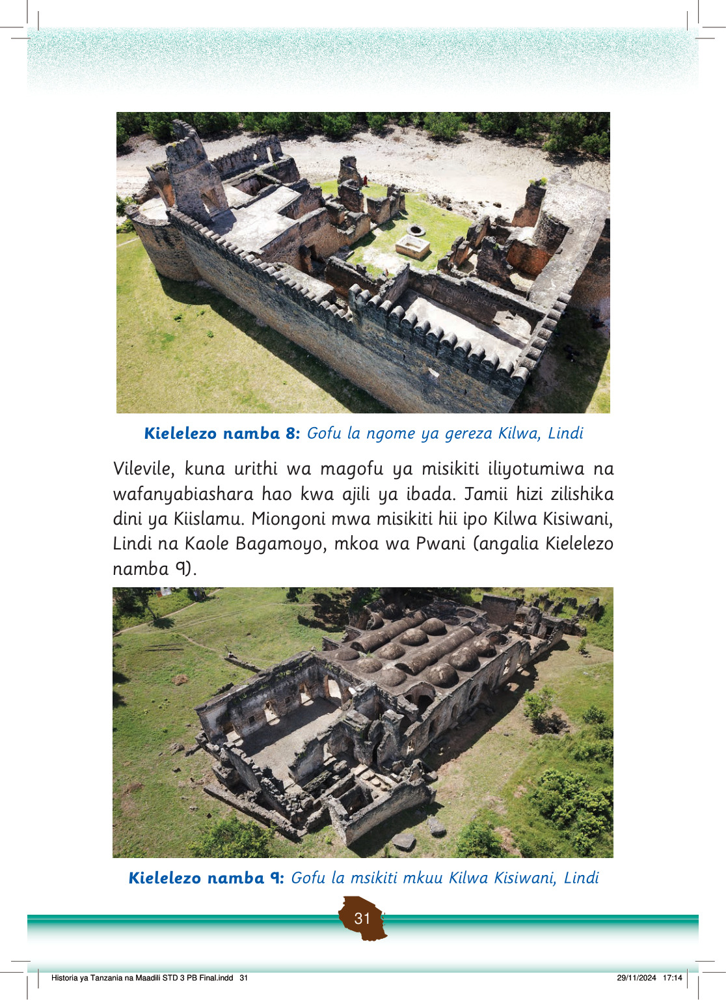

Pia, Kaole kuna magofu ya msikiti, makaburi na kisima kilichotumiwa na wafanyabiashara kutoka Mashariki ya Kati.
Angalia magofu hayo katika Kielelezo namba 10.
Magofu ya Kaole, Bagamoyo. Kuta za zamani na minara miwili ya mawe vimebaki katika eneo hili la kihistoria.
Kielelezo namba 10: Magofu yaliyopo Kaole, Bagamoyo
Vilevile, Kaole kuna urithi wa bidhaa kama sahani na shanga zilizioletwa na wafanyabiashara kutoka Mashariki ya Mbali na Kati.
Urithi wa bidhaa hizo upo katika makumbusho ndogo iliyopo Kaole.
Makumbusho mbalimbali nchini zina bidhaa kama vile vigae, vyombo na shanga zilizioletwa na wafanyabiashara kutoka Mashariki ya Mbali na Kati.
Ushirikiano wa kibiashara baina ya wafanyabiashara kutoka Mashariki ya Mbali na Kati na jamii zetu ulisababisha kukua na kuenea kwa lugha ya Kiswahili.
Baadhi ya maneno ya lugha ya Kiswahili yamekopwa kutoka katika lugha zilizotumiwa na wafanyabiashara hao.
Maneno kama vile, sadaka, mwalimu, akili, tisa, ahadi, shikamoo, marahaba, ahsante, madrasa na kitabu yamekopwa kutoka katika lugha ya Kiarabu.
Pia, maneno
Historia ya Tanzania na Maadili STD 3 PB Final.indd 32
29/11/2024 17:14